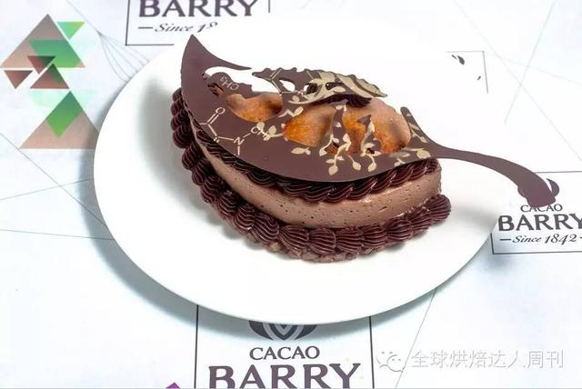
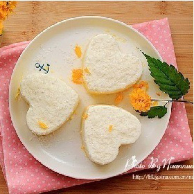

这些牛掰了法式西点居然全都是---诱惑别人的？
提供者：晓晓 发布日期：2016年7月27日15:00
你是不是也很想自己能亲手制作美艳的甜品呢？你是不是也很想知道在哪儿能学到这么美的甜品呢？“全球烘焙法式西点精品班”面向零基础或有初级基础的法式西点爱好者，想提高自家产品水平的私家烘焙经营者、甜品店或咖啡店经营者开展培训课程，甜品大师亲自授课。
阅读详情

WCM总决赛（日本）作品----“生命之叶”巧克力蛋糕配方！
提供者：晓晓 发布日期：2016年7月27日 7:00
一款叶子造型的巧克力蛋糕，以非洲动物剪影做装饰。欧克奥黑巧克力和略带烟熏味的巴布亚巧克力，与清新的煎煮绿苹果和梨子的味道相融合，达到完美平衡。这里有最全的“生命之叶”的配方，以及他的制作者厨师----Onobayas的获奖情况及简介。看完后，你也可以做出生命之叶。
阅读详情

致我们那颗热爱烘焙的心
提供者：晓晓 发布日期：2016年7月27日17:00
若不是因为爱你，怎会一不经意就叹息。手中的面团是有温度的；我能听见酵母液不开心了；稳扎稳打，一步一个脚印，累计信用，只做区域品牌；加强产品地域属性，容和地域文化，打响品牌突击战；新厂址搬迁；这是每个烘焙师在烘焙这条甜蜜又荆棘的道路上前行的真实写照。
阅读详情
半熟芝士蛋糕，正在掀起一场蛋糕界的新革命！
提供者：晓晓 发布日期：2016年7月27日21:00
当每日遇到美味、可口、快捷的饮食需求，这将会发生什么样的故事呢？无论是营养早餐，温馨下午茶，还是熬夜时分的宵夜需求，芝士蛋糕总会是您在饥饿急需补充能量时候的第一选择。有别于传统芝士蛋糕的单一，奶油半熟芝士蛋糕正在掀起一场蛋糕世界的“新革命”！
阅读详情
分类
> 设计原理
> 蛋糕照片
> 文字描述
> 配料类型
最新报道
习近平提出“供给侧改革”——烘焙4.0时代来临，传统烘焙人要有危机意识。
May 21, 2017
李克强总理做客3W咖啡——“双创”成为这个时代最流行的主题。
May 21, 2017
新版《食品安全法》颁布实施——传统烘焙业应该朝品牌化方向努力。
May 21, 2017
达利园集团赴香港上市——资本的力量日益受到更多关注。
May 21, 2017
烘焙大事件
年初，吴晓波的一篇《去日本买只马桶盖》引爆了舆论，这不仅是中国企业的屈辱，更是中国制造的忧伤。11月10日和18日，九天时间里，习近平总书记两次提到“供给侧改革”，目的是希望从供给、生产端入手，提高产品质量，让国人愿意为中国的产品和服务埋单。具体到烘焙行业，当前中国烘焙行业面临的主要矛盾是“三高一低”，即运营成本高、供应成本高、人工成本高，利润空间低。面对这一矛盾，传统烘焙人需要响应“供给侧改革”的号召，重视并利用人工智能、互联网+、大数据等烘焙4.0技术，来帮助企业走出困境。烘焙4.0时代，是一个颠覆性的时代，成败均将提速，传统烘焙人应做好充足准备。
买者反馈
陈先生：手把手教授哦，老师很专业很耐心呢，做不好的地方还会要求我重新做几次，真的是授之以渔啊！比我自己还负责。还经常讲些有关食材的知识。很好!
About 24 hours ago
张女士：一对一教学很轻松，完全零基础的也能轻松做出好吃的蛋糕，很健康，非常快乐的烘培时光，感谢～
About 28 hours ago